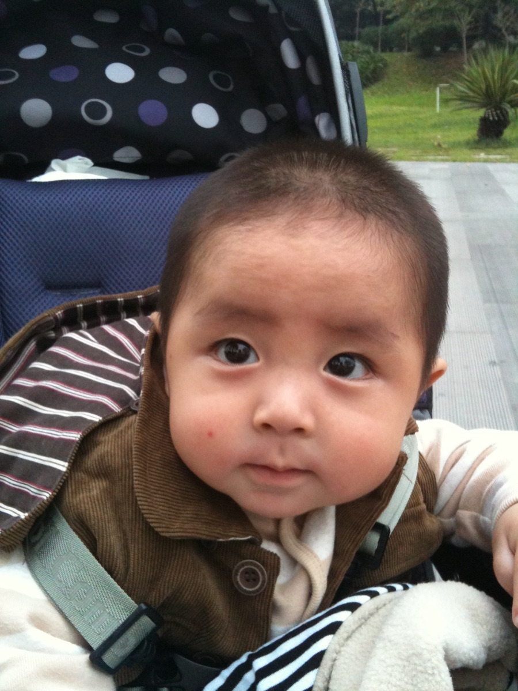
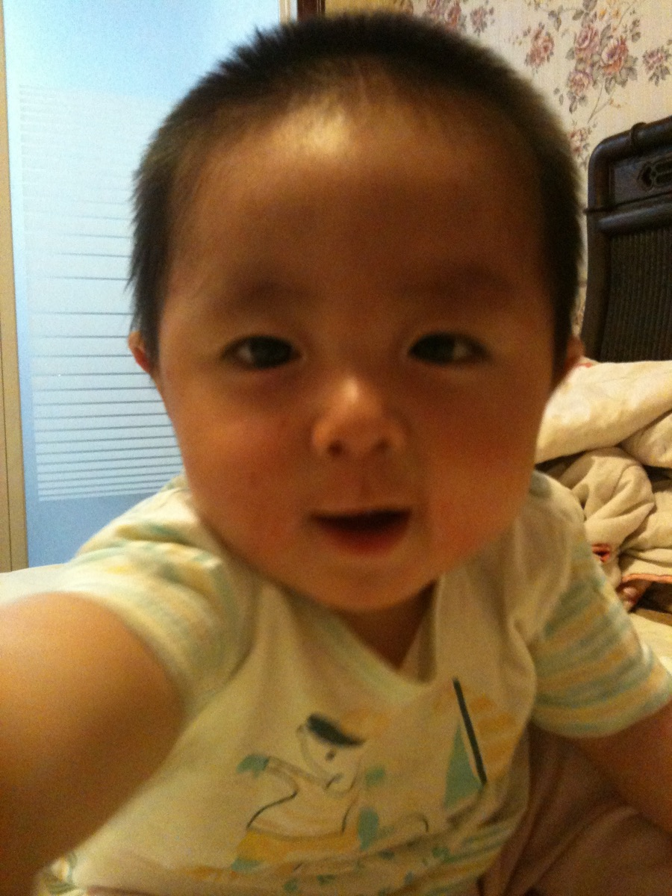

他长牙了。
今天爸爸去西安出差，妈妈带我回妈妈家。昨天去妈妈祖屋拜了太婆，然后去小虎头家玩，晚上到王鑫姐姐家吃饺子，还和月月上了网络视频，她胖了，黑了，大伯也是。我长牙了，而且不止一次个，有6个之多，妈妈和奶奶打电话分享快乐。口水多，磨牙多了。
今注：六颗牙，是母亲数出来的。
保姆干不下去了。
爸爸出差，这几天我和妈妈就住在外婆家。保姆也干不了了，因为她腰扭伤，无法坚持下去，外婆干得更加辛苦了。妈妈这几天都要去找保姆。爸爸先去了西安，还去了姑姑家……
今注：阿姨的腰，二月扭过一次，四月又扭了一次。
他发烧。
这两天发烧了，人很乖但是有些呆，没有平时那样活泼，有些栖妈妈。
今注：配了一张照片。

我的日记快成周记了。懒惰！这几天都在延续上次的扁桃体发炎，还有些支气管炎症状，主要是痰多排不出。呼吸不畅。有些消瘦了，前几天在越秀区儿童医院看，顺便秤体重23斤，没有进步。妈妈也累感冒了，这两天很辛苦。
今注：二十三斤。半年前是十三斤。
我和爸爸玩手机。
今注：日记到这里断了。
2011 年 4 月 27 日，他父亲写下最后一行：我和爸爸玩手机。
